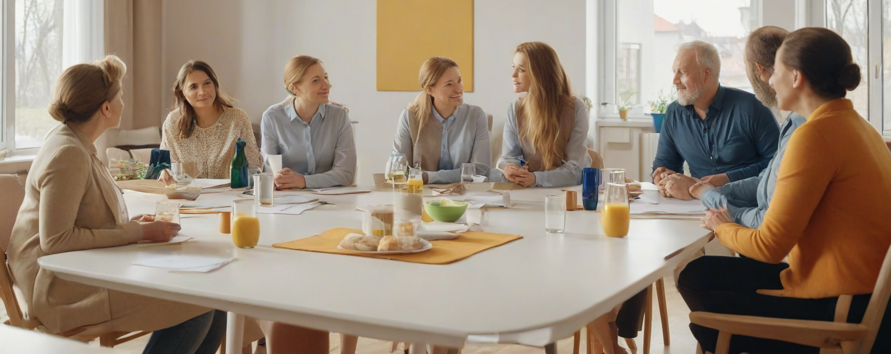
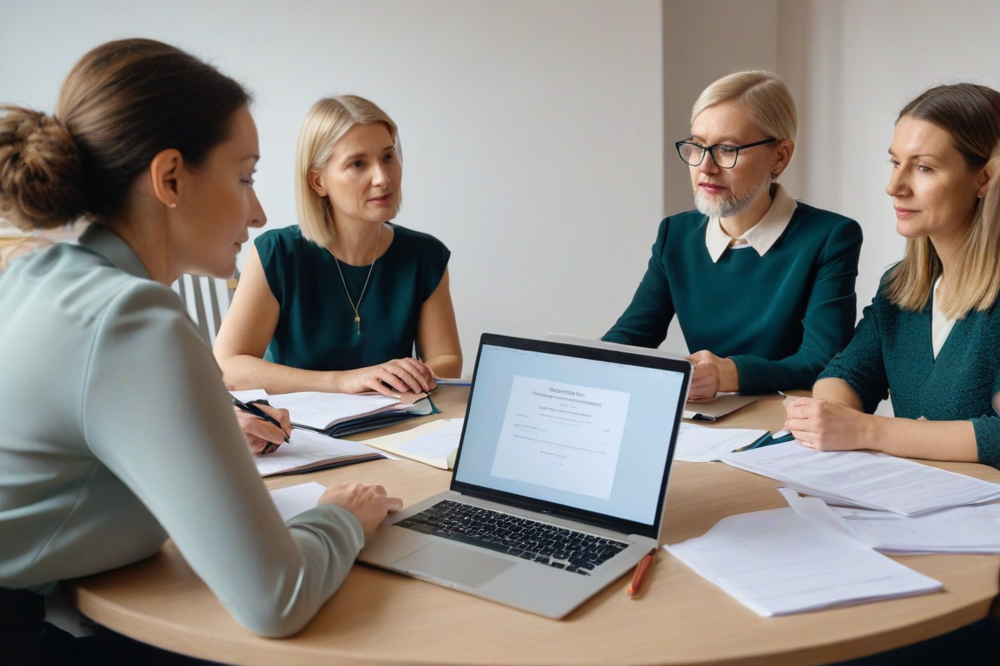
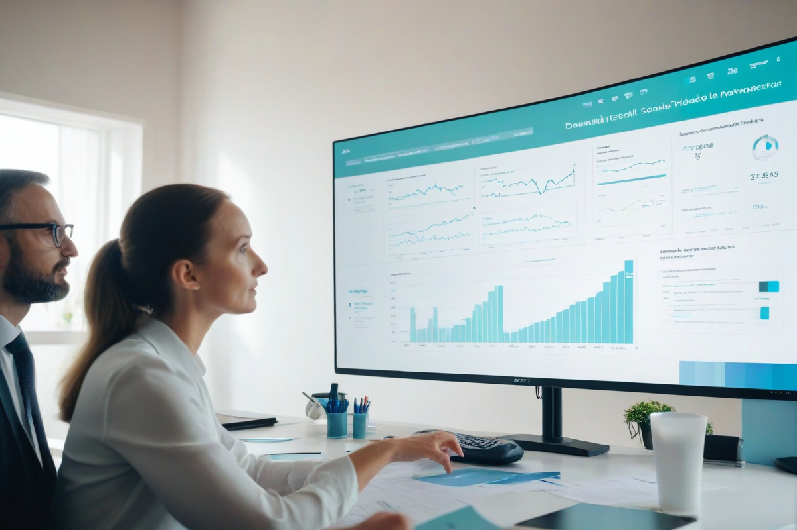
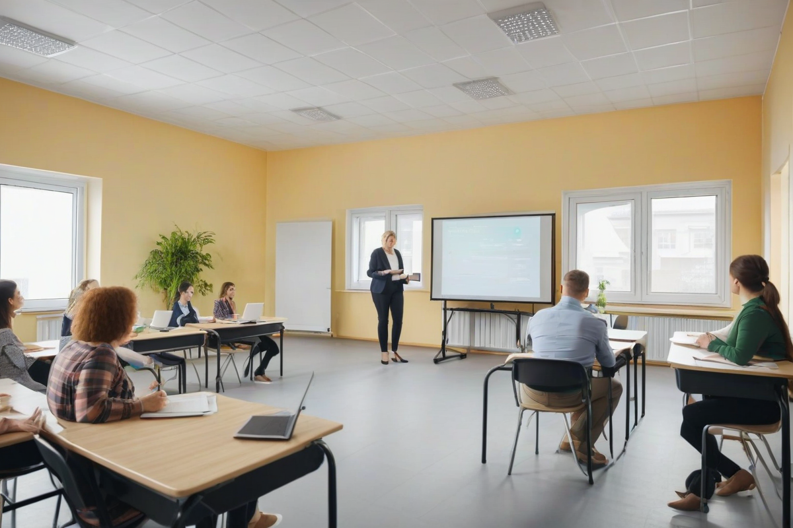
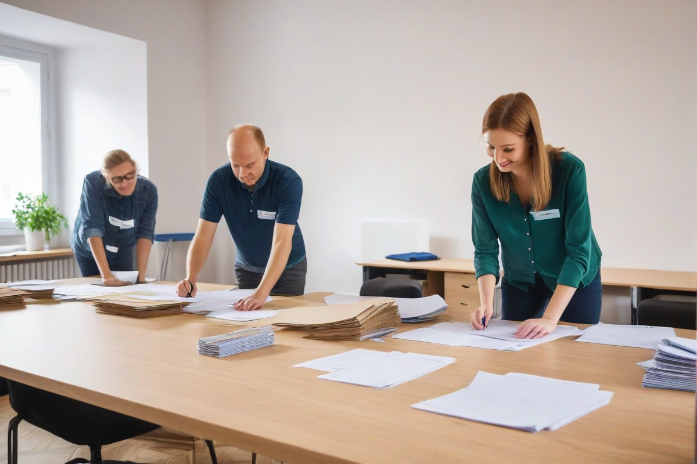
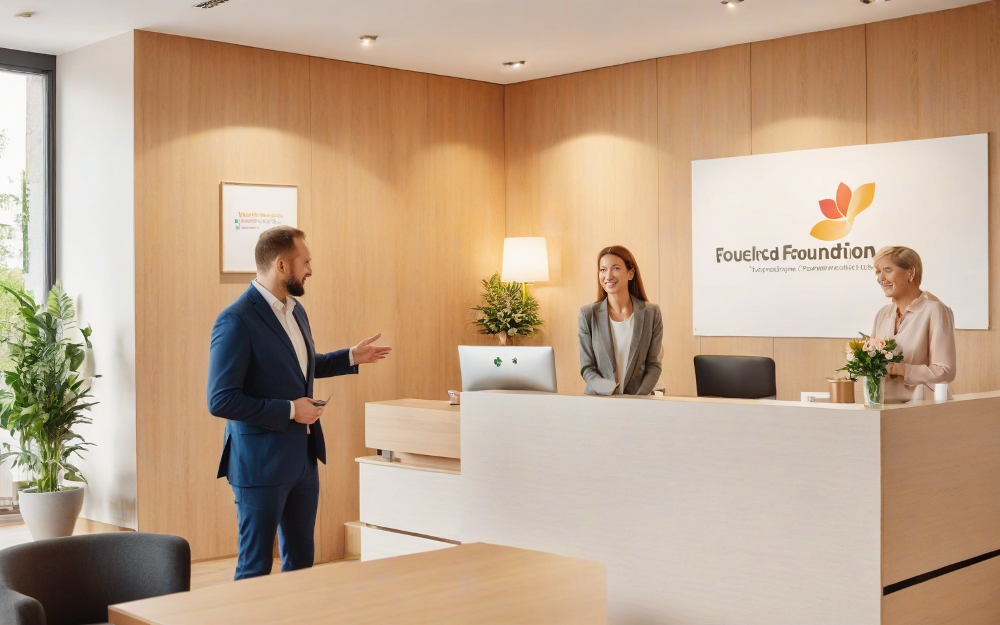

Edukacja, wychowanie i profilaktyka
Wspieramy dzieci i młodzież, prowadzimy warsztaty dla nauczycieli, rady pedagogiczne oraz diagnozy i ewaluacje pracy szkół.

Fundacja Instytut Badawczo-Edukacyjny Meritum
Tworzymy i wykorzystujemy wiedzę w praktyce, aby wspierać osoby, organizacje i społeczności w odzyskiwaniu sprawczości.
O fundacji
Fundacja Instytut Badawczo-Edukacyjny MERITUM prowadzi działalność statutową w zakresie edukacji, nauki, ochrony i promocji zdrowia, działań na rzecz dzieci i młodzieży oraz przeciwdziałania uzależnieniom i patologiom społecznym.
Łączymy badania, diagnozę i edukację z wdrażaniem dopasowanych rozwiązań, które prowadzą do trwałej poprawy jakości życia i funkcjonowania.

Misja i wizja
Naszą misją jest wspieranie rozwoju edukacji i uczenia się przez całe życie, wzmacnianie zdrowia i dobrostanu oraz rozwój usług społecznych odpowiadających na realne potrzeby osób i rodzin.
Nasze obszary działań
Wspieramy dzieci i młodzież, prowadzimy warsztaty dla nauczycieli, rady pedagogiczne oraz diagnozy i ewaluacje pracy szkół.

Prowadzimy diagnozę, poradnictwo i warsztaty zdrowotne wzmacniające dobrostan fizyczny i psychiczny oraz zdrowe nawyki.

Oferujemy wsparcie oparte na indywidualnej diagnozie sytuacji, usługi opiekuńcze i monitorowanie skuteczności pomocy.

Animujemy działania wspólnot lokalnych, promujemy region i rozwijamy wolontariat edukacyjny, społeczny i specjalistyczny.
Doświadczenie projektowe
.png)
Termin: 15.03.2026 – 31.08.2026
Kompleksowe przygotowanie studentów V roku do profesjonalnej pracy wolontariackiej na rzecz osób z niepełnosprawnościami. Projekt finansowany ze środków PFRON w ramach konkursu „MOC MAŁYCH INICJATYW”.
Termin: 15.03.2026 – 30.05.2026
Program szkoleniowo-rozwojowy dla studentów obejmujący warsztaty, mentoring i praktyczne doświadczenie wolontariackie realizowane w województwie lubuskim.
Termin: 01.03.2025 – 15.07.2025
Rozwój kompetencji międzykulturowych i poradniczych uczestników, wsparcie dzieci i młodzieży z doświadczeniem migracji oraz przygotowanie kadry edukacyjnej do pracy w środowisku wielokulturowym.
Termin: 01.07.2021 – 30.09.2021
Projekt angażujący młodzież w wolontariat odpowiadający na potrzeby lokalnej społeczności, szczególnie osób samotnych, seniorów i osób zagrożonych wykluczeniem.
Jak możesz pomóc

Zostań ekspertem, badaczem lub doradcą w naszych programach.
Dołącz do wolontariatu →Realizuj z nami cele CSR i wzmacniaj społeczną odpowiedzialność biznesu.
Nawiąż partnerstwo →„Nawet najmniejsza pomoc jest wielkim krokiem ku lepszej przyszłości dla kogoś, kto stracił nadzieję.”

Kontakt i współpraca
Fundacja Instytut Badawczo-Edukacyjny Meritum
ul. Sowia 9, 65-507 Zielona Góra, Polska